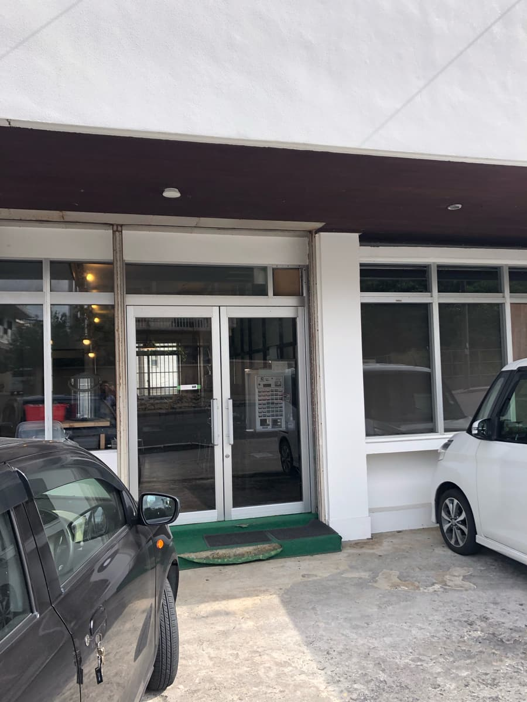
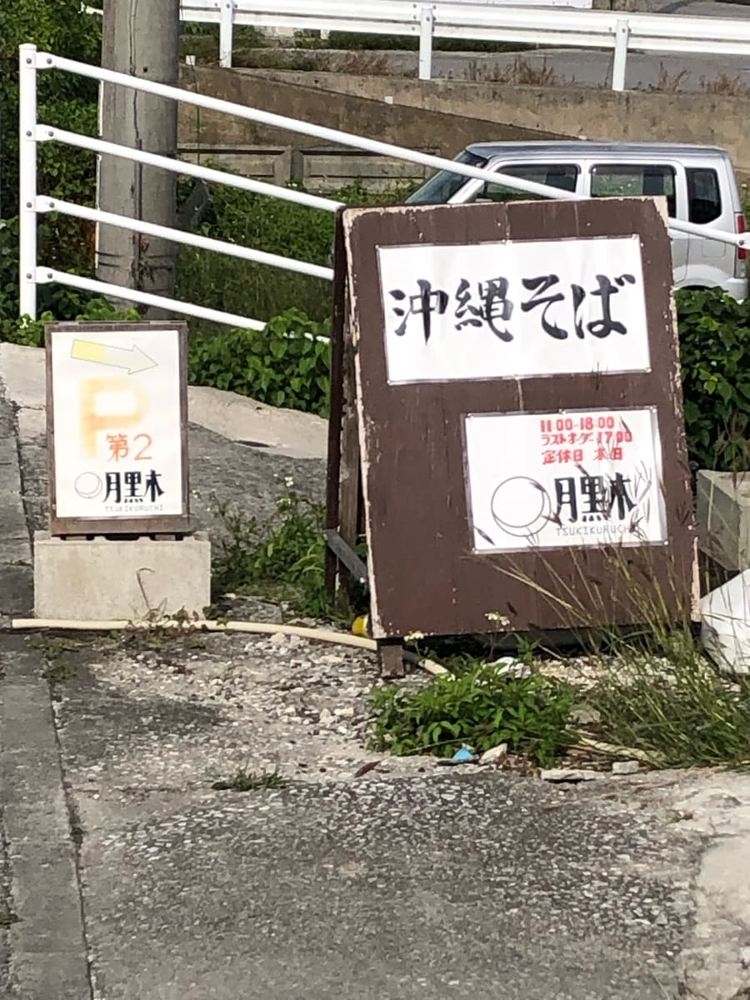
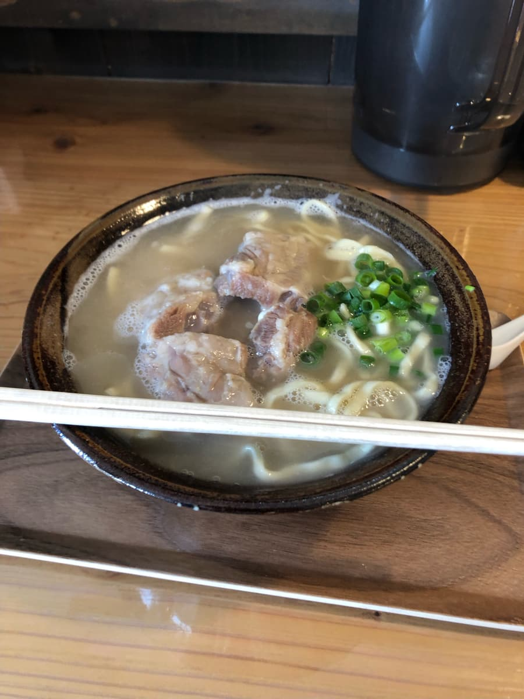
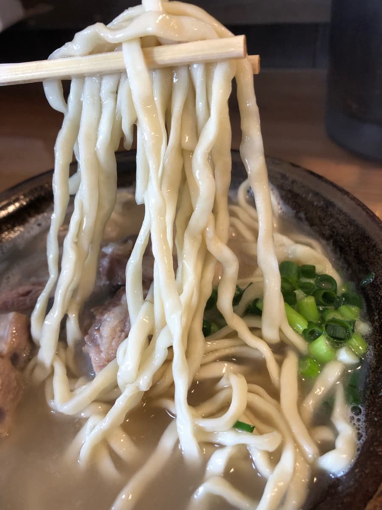

2023년 11월에 먹으러 갔습니다😊 '제13회 오키나와 소바 스탬프 랠리(2023.10.1~2024.2.29)' 기간 중이라 참가 가게에서 먹고 싶었지만, 볼일이 있던 우루마시 근처의 스탬프 랠리 참가 가게는 이미 먹어서 클리어했기 때문에, 스탬프 랠리 대상이 아닌 가게지만 전부터 궁금했던 이 가게에서 먹기로 했습니다.

이 쓰키쿠루치는 전에 먹었던 '시마 소바' 바로 옆쯤에 있는데, 가게 앞 도로가 비교적 한산해서 차들이 속도를 꽤 내는 편이라 지나치기 쉬워요(;^ω^) 간판이 없다고 할까, 눈에 잘 안 띄더라고요. 시마 소바 쪽이 알아보기 쉽네요.

가게 안에 들어가니 입구 근처에 식권 발매기가 설치되어 있었습니다. 이 가게도 현금만 가능ㅋㅋ 빨리 모든 오키나와 소바 가게가 캐시리스 결제에 대응해 줬으면 좋겠네요, 효율화에 도움이 될 거라고 생각해요(웃음)
이번에는 '소키 소바(중? 보통?)'를 주문.

미리 검색해 본 정보로는 '진한 돼지뼈 육수' 국물이라고 합니다. 색도 조금 뽀얀 편이라 확실히 돼지뼈 베이스로 보이네요.
우선 늘 하던 대로 국물을 한 모금. 확실히 돼지뼈 육수입니다. 게다가 잡내도 없고 꽤 부드럽게 완성되어 있어요. 전에 먹은 아구 돼지 육수의 '가메 소바' 국물보다는 맛있다고 생각했지만, 제가 추천 잠정 4위로 소개하고 있는 '796(난쿠루)'만큼의 진하고 크리미한 맛은 없다고 느꼈습니다.

다음으로 면을 먹어 봅니다. 면은 가는 편의 스트레이트 타입. 부드러운 편이네요. 건더기는 연골 돼지갈비(난코츠 소키). 아주 부드럽게 익어 있어서 사르르 녹는 느낌으로 무난하게 맛있지만, 맛은 담백한 계열이라 저에게는 조금 아쉬운 맛이었습니다.
국물 후반에 코레구스(고추 아와모리)를 넣어 맛을 바꿨습니다. 저는 이것도 맛있게 먹었지만, 돼지뼈의 진한 맛이 사라지고 매콤해지니 부드러운 맛을 즐기고 싶은 분은 넣지 않는 게 좋을지도 모르겠습니다.
평가(9점/15점): 무난하게 맛있습니다. 돼지뼈 국물은 그럭저럭 부드럽고 맛있어요. 2022년 오픈이라 가게 안도 깨끗합니다. 이 가게도 한번 가 보시는 건 어떨까요?
면: ★★★☆☆（3）
수프: ★★★☆☆（3）
토핑: ★★★☆☆（3）